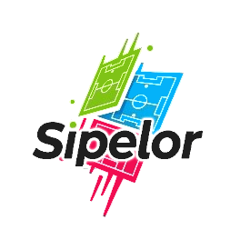

SIPELOR BEDAS
Sistem Pemesanan Lapangan Olahraga
Masuk ke Panel Admin
Administrator, Manager, Operator, atau OPD/Pimpinan — gunakan username atau email.
Email / Username
*
OPD/Pimpinan: cukup ketik username (contoh:
dispora
)
Password
*
👁️
Masuk